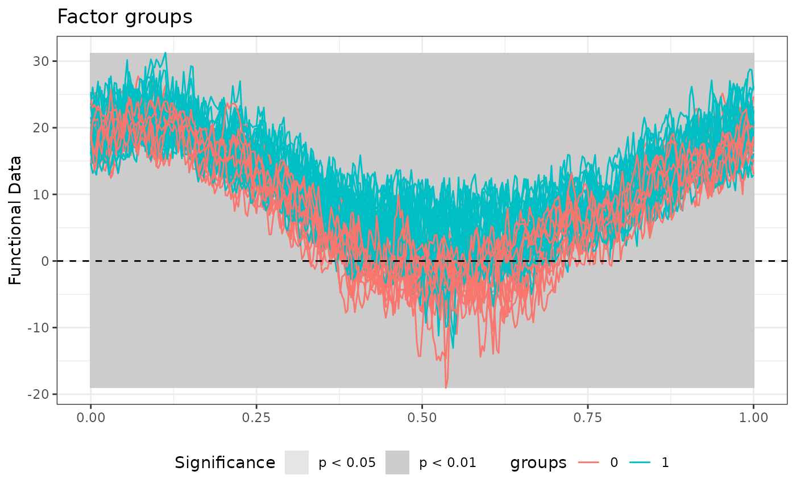
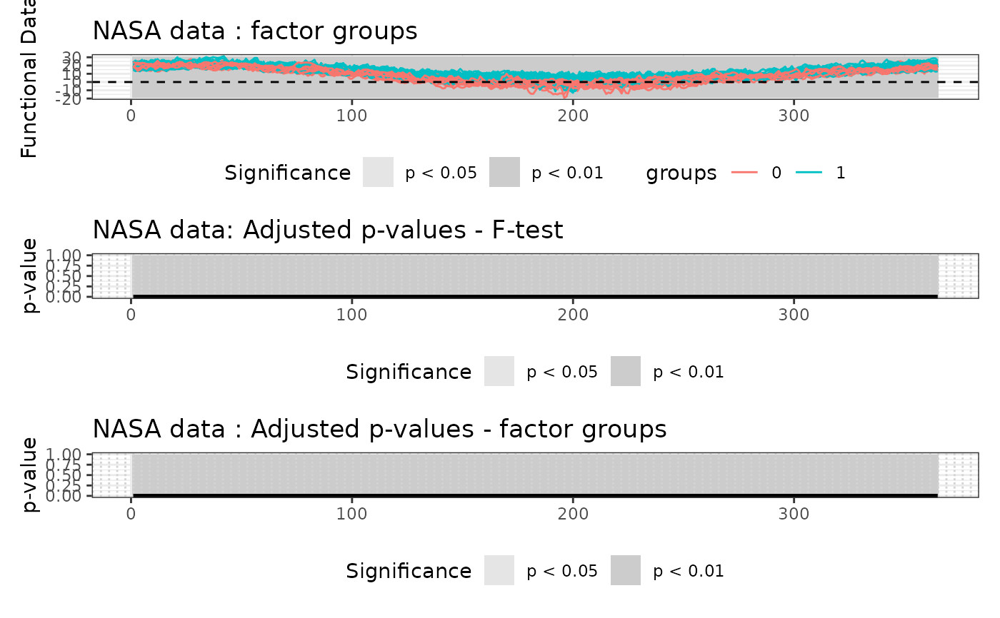

Global testing procedure for testing functional analysis of variance
Source:R/aov-global.R
global_aov.RdImplements the Global Testing procedure for comparing the mean functions of several functional populations in a one-way or multi-way functional analysis of variance framework. Functional data are tested globally. The adjusted p-value function is constant and controls the family-wise error rate weakly.
Arguments
- formula
An object of class
stats::formula(or one that can be coerced to that class) specifying the model to be fitted in a symbolic fashion. The response (left-hand side) can be either a matrix of dimension \(n \times J\) containing the pointwise evaluations of \(n\) functions on the same grid of \(J\) points, or an object of classfda::fd.- dx
A numeric value specifying the discretization step of the grid used to evaluate functional data when it is provided as objects of class
fda::fd. Defaults toNULL, in which case a default value of0.01is used which corresponds to a grid of size100L. Unused if functional data is provided in the form of matrices.- n_perm
An integer value specifying the number of permutations for the permutation tests. Defaults to
1000L.- method
A string specifying the permutation scheme.
"residuals"permutes residuals under the reduced model (Freedman-Lane scheme);"responses"permutes the responses (Manly scheme). Defaults to"residuals".- stat
A string specifying the test statistic used for the global test.
"Integral"uses the integral of the F-statistic over the domain;"Max"uses the maximum. Defaults to"Integral".- B
An integer value specifying the number of permutations used to evaluate the p-values of the permutation tests. Defaults to
1000L. Passed asn_perminiwt_aov(),twt_aov()andglobal_aov().
Value
An object of class faov containing the following components:
call: The matched call.design_matrix: The design matrix of the functional ANOVA model.unadjusted_pval_F: A numeric vector of length \(J\) containing the unadjusted p-value function of the global F-test evaluated on the grid.adjusted_pval_F: A numeric vector of length \(J\) containing the adjusted p-value function of the global F-test evaluated on the grid.unadjusted_pval_factors: A numeric matrix with one row per factor containing the unadjusted p-value functions of the per-factor F-tests.adjusted_pval_factors: A numeric matrix with one row per factor containing the adjusted p-value functions of the per-factor F-tests.data_eval: A numeric matrix containing the functional data evaluated on the grid.coeff_regr_eval: A numeric matrix containing the functional regression coefficients evaluated on the grid.fitted_eval: A numeric matrix containing the fitted values of the functional regression evaluated on the grid.residuals_eval: A numeric matrix containing the residuals of the functional regression evaluated on the grid.R2_eval: A numeric vector containing the functional R-squared evaluated on the grid.
Optionally, the list may contain the following components:
pval_matrix_F: A matrix of dimensions \(p \times p\) of p-values of the interval-wise F-tests. Element \((i,j)\) contains the p-value of the test on the interval \((j, j+1, \ldots, j+(p-i))\). Present only ifcorrectionis"IWT".pval_matrix_factors: An array of dimensions \(L \times p \times p\) of p-values of the per-factor interval-wise F-tests. Element \((l,i,j)\) contains the p-value of the joint test on factor \(l\) and interval \((j, j+1, \ldots, j+(p-i))\). Present only ifcorrectionis"IWT".global_pval_F: Global p-value of the overall F-test. Present only ifcorrectionis"Global".global_pval_factors: A numeric vector of global p-values of the per-factor F-tests. Present only ifcorrectionis"Global".
References
Abramowicz, K., Pini, A., Schelin, L., Stamm, A., & Vantini, S. (2022). “Domain selection and familywise error rate for functional data: A unified framework. Biometrics 79(2), 1119-1132.
D. Freedman and D. Lane (1983). A Nonstochastic Interpretation of Reported Significance Levels. Journal of Business & Economic Statistics 1.4, 292-298.
B. F. J. Manly (2006). Randomization, Bootstrap and Monte Carlo Methods in Biology. Vol. 70. CRC Press.
See also
iwt_aov(), twt_aov() and global_aov() for calling a
specific correction directly. plot.faov() for plotting the results and
summary.faov() for summarizing the results.
Examples
temperature <- rbind(NASAtemp$milan, NASAtemp$paris)
groups <- c(rep(0, 22), rep(1, 22))
# Performing the test
Global_result <- global_aov(temperature ~ groups, n_perm = 1000L)
#>
#> ── Point-wise tests ────────────────────────────────────────────────────────────
#>
#> ── Global test ─────────────────────────────────────────────────────────────────
#>
#> ── Global Testing completed ────────────────────────────────────────────────────
# Summary of the test results
summary(Global_result)
#> $call
#> functional_anova_test(formula = formula, correction = "Global",
#> dx = dx, B = n_perm, method = method, stat = stat)
#>
#> $factors
#> Minimum p-value
#> groups 0 ***
#>
#> $R2
#> Range of functional R-squared
#> Min R-squared 3.390203e-05
#> Max R-squared 5.399620e-01
#>
#> $ftest
#> Minimum p-value
#> 1 0 ***
#>
# Plot of the results
layout(1)
plot(Global_result)

# All graphics on the same device
layout(matrix(1:4, nrow = 2, byrow = FALSE))
plot(
Global_result,
main = "NASA data",
plot_adjpval = TRUE,
xlab = "Day",
xrange = c(1, 365)
)
